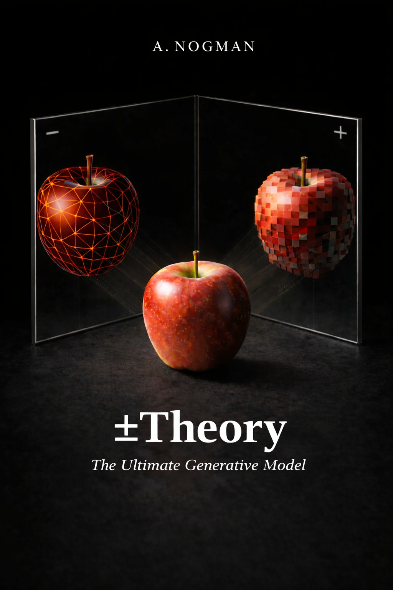

You're here because you likely have a copy of ±Theory book — or because someone who does shared this link with you. That's perfectly fine. If you find the ideas valuable and want to support future research in this direction, you can always purchase the book later.
Press the buttons below to access AI companions or explore the text using your preferred AI tools. Please keep in mind that large language models can hallucinate or misinterpret context. For original formulations and accurate references, return to the book itself before drawing conclusions.

The Born rule states that for a quantum system described by amplitudes (a₁, a₂, ..., aₙ) over possible outcomes, the probability of obtaining outcome k upon measurement is:
P(k) = |aₖ|²
This derivation shows that within ±Theory, the Born rule is not an independent postulate but follows necessarily from the framework's foundational commitments plus elementary geometric structure. No additional axioms are introduced beyond those already established earlier in the book.
This derivation invokes two principles established earlier in ±Theory. Both are stated here so the argument is self-contained:
Principle 1: Shortest stabilizable description stabilizes first (Knowledge Highways). Introduced in Chapter 2 of the book. The Tree of Knowledge grows by exhausting all shortest available generative paths before longer ones become accessible. "Description length" is operational: it is the number of available primitive operations required to generate a structure from what is already stabilized. At the earliest stage, only COPY and FLIP are available (from the ± duality itself), so ++ stabilizes before +− because ++ = COPY (one operation) while +− = COPY + FLIP (two operations). Once a structure stabilizes, it becomes a reusable construct — a "knowledge highway" — that reduces the effective description length of anything composable from it. This is the same principle that produces Rule 110/124 dominance, that selects 3D space at level 3 of the recursive structure, and that drives the asymmetric growth of the tree throughout the framework.
Principle 2: Discrete and continuous are description choices at sufficient depth. The tree grows multiplicatively — each level multiplies the available distinctions by 2. At any depth sufficient to support patterns of meaningful complexity, the granularity of discrete distinctions becomes finer than any operational measurement can resolve. Whether the underlying structure is called "discrete with high resolution" or "continuous" is a description choice, not a fact about the structure. Quantum mechanics operates at depths where the continuous description is the natural one; the discrete substrate underneath does not contradict it.
These two principles do most of the philosophical work below. Both are framework principles, defined and used throughout the book — not new postulates introduced for this derivation.
Within ±Theory, reality is the ongoing unfolding of a recursive generative process. Patterns within this process exist in two regimes:
Quantum mechanics describes the pre-stabilization regime. Classical physics describes the post-stabilization regime. "Measurement" is the event of commitment — the transition from one regime to the other.
This is the central clarification that makes the rest of the derivation make sense:
In ±Theory, three-dimensional space is not a container. It is a compression of the recursive knowledge tree, represented at any chosen resolution depth n as an octree — a recursive subdivision of space into 2×2×2 = 8 sub-regions at each level. After n refinement steps, space is represented by 8ⁿ voxels, with arbitrarily fine resolution available in principle.
A "particle" is not an object in 3D space. It is a flickering, unstabilized pattern within the recursive tree. The pattern does not have a location until spatial commitment occurs.
The index k ranges over the voxels of the octree at whatever resolution depth is being considered. The amplitude aₖ is the compatibility weight between the unstabilized pattern and voxel k — a measure of how strongly the pre-spatial pattern aligns with the possibility of committing to that particular voxel in the spatial projection.
So the amplitude vector
a⁽ⁿ⁾ = (a₁, a₂, ..., a_{8ⁿ})
is the pattern's full compatibility profile across all voxels at resolution depth n. It is not a description of "where the particle is." It is a description of how the unstabilized pattern relates to every possible voxel that could become its spatial location upon commitment.
When stabilization occurs, exactly one voxel is selected. The pattern is now "located there" in the spatial projection. The Born rule will tell us the probability of each voxel being selected.
The aim of this derivation is to show that P(k) = |aₖ|² follows from this picture without introducing any additional postulates.
The core load-bearing observation, and the genuinely novel philosophical move of this derivation:
Pre-stabilization evolution must be reversible — not as an extra assumption, but by definition.
If a pattern's evolution were irreversible, information would have been lost, which means commitment has already occurred. Irreversibility is stabilization. The two are identical, not merely correlated.
Therefore:
This dissolves the measurement problem rather than relocating it. There is no separate dynamical law switching unitary evolution into collapse. "Measurement" is simply the structural boundary where reversibility ends. The framework does not need a measurement postulate because measurement is identified with stabilization, which is built into the framework's foundation.
This identification — irreversibility = stabilization — is the headline of the entire derivation. Everything else is geometry built on this single structural commitment.
What is the minimal structure that supports reversible evolution rich enough to describe quantum behavior?
One real dimension fails. The only reversible operations available are identity and sign-flip. This is too impoverished to support nontrivial reversible dynamics.
Two dimensions succeed. A 2D space with a rotation rule allows infinitely many reversible operations (rotation by any angle θ), each with a clean inverse (rotation by −θ).
Why 2D and not 4D (quaternions) or higher? This is where Principle 1 (shortest stabilizable description) does its work. Higher-dimensional structures like quaternions or octonions would also support reversibility, but they are longer descriptions and stabilize later, if at all. The framework's growth principle selects the minimal stabilizable structure capable of supporting reversibility — which is exactly 2D. 2D is not the only possible carrier of reversibility; it is the carrier that stabilizes first.
Why continuous rather than discrete reversibility? This is where Principle 2 does its work. The framework is built on discrete recursive ticks, but the discrete/continuous distinction is not fundamental within it. At any depth sufficient to support patterns of meaningful complexity, the granularity of discrete distinctions exceeds operational resolution. Continuous rotation is what discrete reversibility looks like once depth exceeds operational resolution.
Dimension alone does not pin down the algebra. A reversible 2D rotational structure is compatible with more than one 2D number system, and they differ physically:
Reversibility (which excludes the nilpotent dual numbers) together with the minimal-path principle (which selects 2D over quaternions and octonions) establishes that the carrier is a reversible, length-conserving 2D algebra. These principles do not, by themselves, single out the complex case (i² = −1, interfering) over the split-complex case (j² = +1, non-interfering).
It is tempting to try to force the complex case from the framework's two involutions — the structural NOT (content-flip, Appendix C) and the order-flip at level 2 (Chapter 2) — by arguing that composing two operations, each squaring to identity, yields something that closes only after four applications and so reproduces i² = −1. That argument does not survive checking. On the four Level-2 strings, content-flip and order-flip commute rather than anticommute, so together they generate the Klein four-group: every element squares to the identity and none has order four. That is not the complex algebra — if anything it sits closer to the split-complex (j² = +1) case — and no choice of sign convention rescues it, since an exhaustive check over all sign assignments yields no anticommuting pair. The two involutions the framework actually supplies therefore do not generate i² = −1, and that derivation is withdrawn.
Selecting the complex case is thus a physical input, not a theorem of the framework: we require that the pre-stabilization regime exhibits interference rather than mere mixing, which is what observation reports. Closing this gap internally would require exhibiting a genuinely anticommuting pair of operations somewhere in the tree — and content-flip and order-flip are not such a pair — so it remains open work. With the complex case adopted as a physical input matching observation, the derivation proceeds.
Therefore, amplitudes aₖ ∈ ℂ. Each aₖ is a complex number encoding the compatibility of the pre-spatial pattern with voxel k of the octree, with magnitude reflecting content compatibility and phase reflecting traversal ordering.
Reversible operations must preserve some quantity. If nothing were preserved, information would be lost, contradicting reversibility.
In a 2D rotational structure (complex numbers), the quantity preserved by all rotations is length (magnitude). Rotations preserve length by definition — that is what makes them rotations rather than scalings or shears.
Therefore, under pre-stabilization evolution:
This is the structural origin of unitarity (U†U = I) in the standard formalism. Unitarity is the bookkeeping expression of reversible internal evolution prior to stabilization.
The amplitude vector a⁽ⁿ⁾ = (a₁, a₂, ..., a_{8ⁿ}) represents the pre-spatial pattern's compatibility profile across all voxels of the octree at resolution depth n. The components are orthogonal because the voxels themselves are orthogonal — each voxel is a distinct, mutually exclusive region of the octree subdivision. A pattern that commits to voxel k cannot simultaneously commit to voxel j ≠ k; they are independent spatial outcomes.
This orthogonality of voxels is what makes the amplitudes orthogonal components of the total compatibility vector. It is structural, not assumed: the octree's recursive subdivision produces mutually exclusive regions by construction.
For orthogonal components in a 2D-per-component (complex) structure, the Pythagorean relation holds:
|a|² = |a₁|² + |a₂|² + ... + |a_{8ⁿ}|²
This is geometry, not an additional postulate.
If the total amplitude vector has length 1 (the natural normalization for a pattern that must commit to some voxel), then:
|a₁|² + |a₂|² + ... + |a_{8ⁿ}|² = 1
Note that the magnitudes themselves (|aₖ|, unsquared) do not sum to 1. They sum to something with no clean meaning. Only the squared magnitudes have the property of summing to the conserved total.
At commitment (stabilization), the pre-spatial pattern resolves into exactly one voxel of the octree. The probability of resolving to voxel k must be a real number P(k) satisfying:
Given the structure built in Steps 1–4, the mapping P(k) = |aₖ|² is what consistency requires. The squared magnitudes are the only quantities derived from aₖ that sum to the conserved total across orthogonal voxels. Magnitudes themselves (|aₖ|) do not sum cleanly. Higher powers (|aₖ|³, etc.) do not respect the Pythagorean structure that voxel orthogonality forces.
Therefore:
P(k) = |aₖ|²
This step is a corollary of Steps 1–4 rather than an independent uniqueness result. By the time the previous steps are accepted, |aₖ|² is the mapping consistent with the structure they build. The novelty of this derivation is not in Step 5 — it is in showing where the structure that Step 5 operates on comes from.
A natural question arises about what physically triggers a stabilization event. The framework's answer is that stabilization is not a binary trigger but a gradient — and this is consistent with how every other selection mechanism in ±Theory works.
Patterns within the framework occupy a spectrum:
The trigger for stabilization, in this view, is the rate at which a pattern accumulates constraints relative to its reversibility-budget. Isolated patterns accumulate few constraints and stay reversible. Coupled patterns accumulate constraints faster than they can be locally reversed, drifting toward stabilization at rates determined by the depth of coupling.
This recovers the empirical content of decoherence theory while providing a structural account of why coupling produces stabilization. Decoherence in standard QM is mathematically described by environmental coupling causing off-diagonal density matrix elements to decay — correct as bookkeeping but ontologically empty. The framework's account is structural: coupling adds constraints, constraints reduce the set of locally reversible continuations, and once that set is small enough relative to the pattern's expressive complexity, the pattern is locally indistinguishable from one that has committed.
This also explains a phenomenon mentioned in the book's empirical note (§4.9): highly redundant microscopic structures (such as nuclei embedded in crystal lattices) behave classically despite their small size. Standard decoherence handles this with coupling math. The framework explains it structurally: those nuclei are embedded in already-stabilized lattices, so most of their possible continuations are constrained by surrounding structure. They have very little reversibility-budget available, so they stabilize quickly — not because they are physically large, but because they are structurally over-constrained.
The framework therefore does not need a separate trigger mechanism. The "when does stabilization happen" question is answered by the gradient: it happens continuously, at rates set by the constraint-accumulation versus reversibility-budget ratio. Sharp measurement events correspond to extreme coupling that exhausts the budget rapidly; isolated quantum coherence corresponds to the opposite extreme.
No postulates are added beyond the framework's foundational commitment that pre-stabilization evolution is reversible — and this commitment is definitional rather than additional, since irreversibility is identical with stabilization.
The derivation draws on three book chapters whose principles do load-bearing work here:
These are not new principles introduced for the Born derivation. They are the same framework principles that operate throughout the book, applied consistently here.
The measurement problem. Standard quantum mechanics postulates two dynamical regimes (unitary evolution and collapse) and cannot explain when or why one switches to the other. ±Theory identifies the two regimes with pre-stabilization and post-stabilization, with the "switch" being identical to the commitment event itself. The trigger for commitment is given by the gradient account above. No bridging postulate is required.
The status of the wavefunction. The amplitudes aₖ are not abstract calculation devices and not mysterious physical fields. They are the compatibility profile of an unstabilized pattern with the voxels of the octree.
The complex structure of quantum mechanics. The 2D dimension is forced as the minimal stabilizable carrier of reversibility, and reversibility rules out the nilpotent (dual-number) algebra. The remaining choice between the complex (i² = −1, interfering) and split-complex (j² = +1, non-interfering) algebras is not forced by the framework; the complex case is adopted as a physical input matching observed interference. Phase encodes ordering information from recursive traversals; magnitude encodes content compatibility.
Why 2D and not higher. Quaternions and octonions would also support reversibility, but Principle 1 selects the minimal stabilizable structure.
The squaring in the Born rule. Squaring is not an empirical fit. It is forced by the Pythagorean decomposition of orthogonal voxels plus the requirement that probabilities sum to one.
Why coupling causes decoherence. Coupling adds constraints; constraints consume reversibility-budget; exhausted budget is stabilization. This recovers decoherence theory's empirical content with structural rather than mechanical explanation.
In the spirit of honest reporting:
Dynamics. This derivation reconstructs the static structure (Hilbert space, Born rule, the regime distinction). The specific form of pre-stabilization dynamics — recovering the Schrödinger equation, the role of ℏ, observables, commutation relations — is open work. The framework provides a substrate within which this can be developed; the development itself is not yet done.
Of the other gaps earlier critique flagged: what triggers stabilization is addressed above (the gradient account). Why the algebra is specifically complex rather than split-complex is not resolved internally — it is scoped above as a physical input matching observed interference, and deriving it would require exhibiting a genuinely anticommuting pair of operations in the tree. That selection and dynamics are the substantive open problems this derivation does not resolve.
The single load-bearing commitment is:
Pre-stabilization evolution must be reversible, because irreversibility is identical with stabilization (spatial commitment).
This is definitional within ±Theory, not an additional postulate. Given this, plus the two foundational principles (shortest-stabilizable-description, discrete/continuous as description choices at sufficient depth) that operate throughout the framework, plus the physical input that the pre-stabilization regime is interfering (selecting the complex over the split-complex algebra — see Step 2), the Born rule follows.
This derivation constructs the substrate that Gleason's theorem assumes. Gleason proves that, given a Hilbert space of dimension ≥ 3 and certain assumptions about how probability measures must behave on it, the Born rule is forced. Gleason does not explain where Hilbert space comes from in the first place, nor where the complex structure originates.
±Theory addresses that prior question. The linear structure, the inner product, the orthogonality of distinct outcomes, and the 2D-per-component carrier all emerge from the framework's commitments (recursive duality, octree compression of space, irreversibility-as-stabilization, shortest-stabilizable-description); the specifically complex (rather than split-complex) character of the amplitudes enters as a physical input matching observed interference. Once these are in place, the Gleason-style reasoning that produces P(k) = |aₖ|² is available, and this derivation uses it in Steps 4 and 5.
The novelty is therefore not in the final step (which echoes existing reconstructions) but in the construction of the substrate. Where Hardy, Chiribella, and Masanes postulate informational principles to derive quantum structure, ±Theory derives those principles themselves from a generative substrate.
So the honest relationship is:
The genuinely new contributions are:
If this work resonates with you, your support helps fund further research and development.
For inquiries and discussions: